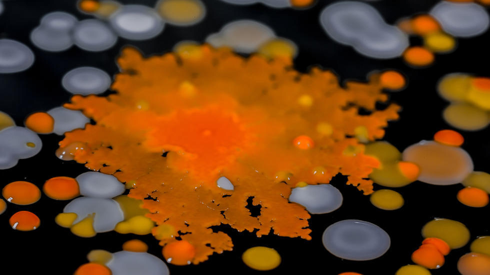

Biological and mechanical analysis of the Human-cell life cycle
(Cambridge, MA) Thriving all around, and even within us, is a minute universe of astonishing and diverse lifeforms so small, they cannot be seen by the human eye. Microbial Life: A Universe at the Edge of Sight explores the fascinating realm of microbes, Earth’s first inhabitants, as they continue to engage with the planet’s biosphere in ways science is only beginning to uncover and understand.
Everything from our food, to the air we breathe, to the forest ecosystem, is based on the activity of unseen microbes going about their lives, interacting with one another and with other organisms. Taking museum visitors through a multisensory journey into this fascinating, invisible realm, the Microbial Life odyssey provides a unique opportunity to experience the wonders of microbial activity and the surprisingly stunning beauty of bacterial forms.
A familiar entryway to the microbial sphere is the kitchen. The exhibit’s full-scale model kitchen offers interactive stations introducing people to the tiny cohabitants that exist everywhere in built-environments, helping answer common questions such as, “Can I eat the leftovers?” and “What stinks?”
How are microbes a vital part of Earth’s ecosystem?
Museum-goers can examine live colonies of soil bacteria that help sustain terrestrial environments; or delve into ocean depths to uncover secrets about bizarre microbial sea life; or even learn about microbes representing some the oldest living things, and how their study informs the search for extraterrestrial life.
Do microbes live inside us too?
Through captivating displays of specimens and models from the Harvard Museum of Comparative Zoology and Harvard Medical School, along with scheduled, live demonstrations by Harvard students and researchers, visitors can learn how microbes engage with the bodies of humans and animals of all sizes, from termites to whales.
“Humans, and all plants and animals that we see, evolved completely surrounded by microbes. Not only have microbes driven our evolution, they continually support all of life on Earth,” said Roberto Kolter, professor of microbiology at Harvard Medical School and director of Harvard’s Microbial Sciences Initiative. “I’m very excited to be part of this remarkably important exhibition, which is among the first in the world dedicated to the advancement of our knowledge of the microbial universe.”
Scott Chimileski, a research fellow in Kolter’s laboratory, emphasized that the unique exhibition will feature live microbes, in addition to the trillions already existing on and all around us.
“We will explore living microbial ecosystems that are present on some of our favorite foods, like cheese,” he said. “We will even bring microbial ecosystems from outdoor environments into the museum, like a 5-foot high mud microcosm called a Winogradsky column, layered with colorful microbial patterns.”
Harvard Museums of Science & Culture Executive Director Jane Pickering said the museums aim to work with collaborators from across Harvard to bring this relevant, cutting edge science to the public.
“We have wonderful, creative scientists and educators working hard to bring tangibility to the abstract world of microbial activity,” she said. “We are interested in helping people understand some fundamental life elements impacting our daily existence through a hands-on experience, and the Microbial Life exhibition does just that.”
This project was made possible in part through grants from the Alfred P. Sloan Foundation and the National Science Foundation, and a generous gift from Clark Bernard MBA ‘68 and Susana Bernard. We would also like to thank Harvard’s Microbial Science Initiative for its support and guidance in planning the exhibition.
Prior to opening, a free public lecture on Microbial Life: A Universe at the Edge of Sight with Professor Roberto Kolter of the Department of Microbiology and Immunobiology at Harvard Medical School, will be held in the Geological Lecture Hall at the Harvard Museum of Natural History, 24 Oxford St., on Thursday, Feb. 15 at 6 p.m. Free event parking is available at the 52 Oxford Street Garage.
World in a Drop: Photographic Explorations of Microbial Life on display through January 7, 2018, is an aesthetic journey into the microbial world using expertly executed photography, videography, and poetic narration by Harvard scientists Scott Chimileski and Roberto Kolter, who capture the intrinsic beauty of a mysterious world that is seldom recognized.
About the Harvard Museum of Natural History
One of the Harvard Museums of Science & Culture, the Harvard Museum of Natural History is located at 26 Oxford St., Cambridge, on the Harvard campus, a 8-minute walk from the Harvard Square Red Line MBTA station. The museum is wheelchair accessible. The museum is open from 9 a.m. — 5 p.m., 361 days/year. Admission: adults $12; seniors and students, $10; youth ages 3–18, $8; under 3 free. For directions, exhibition schedules, lectures, and information on parking, see the website or call 617.495.3045.